Deployment Overview
This guide demonstrates how to integrate Wi-Fi in WatchGuard Cloud with Portnox™ CLEAR to ensure secure and trusted user access with RADIUS.
Platform and Software
The hardware and software used to complete the steps in this document include:
- Portnox™ CLEAR
- Portnox™ CLEAR Account
- WatchGuard
- WatchGuard AP330 access point
- WatchGuard Cloud account
Test Topology

Portnox™ CLEAR Configuration
- Log in to the Portnox™ CLEAR Management Portal.
- Select Devices > Accounts.
- Click
 to create a new Portnox™ CLEAR account.
to create a new Portnox™ CLEAR account. - In the Email text box, type an email address that is associated with your organization.
- (Optional) In the Description text box, type the description for the account.
- Keep all other settings as the default value.
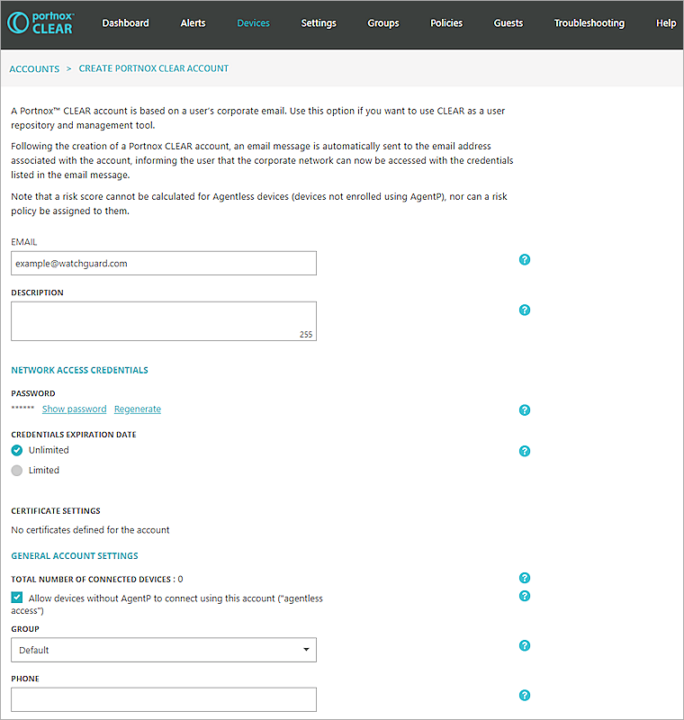
- Click Save account.
- The email address you specify will receive a notification with a password that you can use with RADIUS authentication.
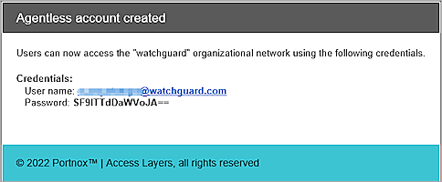
- Select Settings > + CLEAR RADIUS SERVICE > Create new CLEAR RADIUS instance.
- From the Location drop-down list, select your location. Click Create.
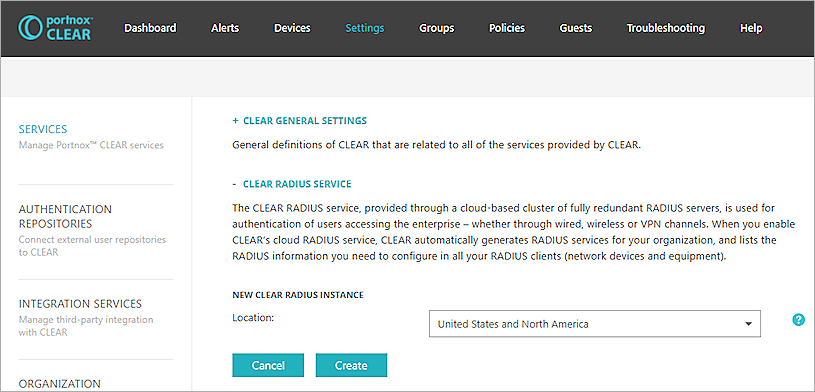
- Record the Cloud RADIUS IP, Authentication port, and the Shared Secret.
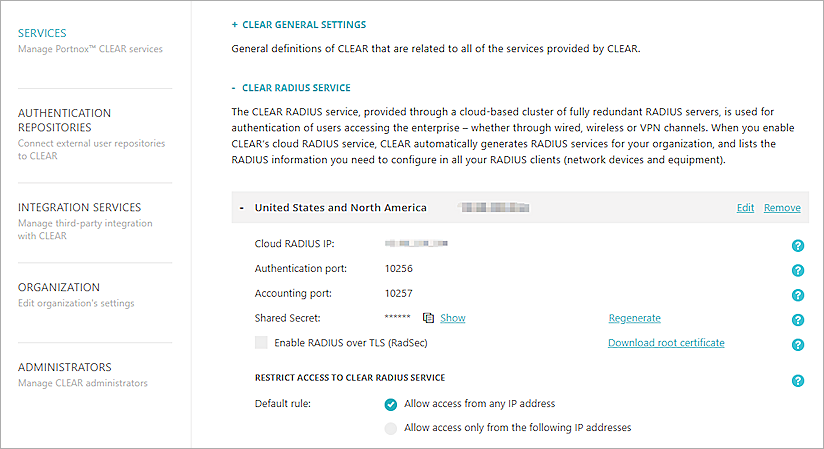
- Select Groups > Create New Group.
- In the Group Name text box, type the group name.
- In the 802.1X WIRELESS NETWORK ACCESS section, click Add Wi-Fi Network.
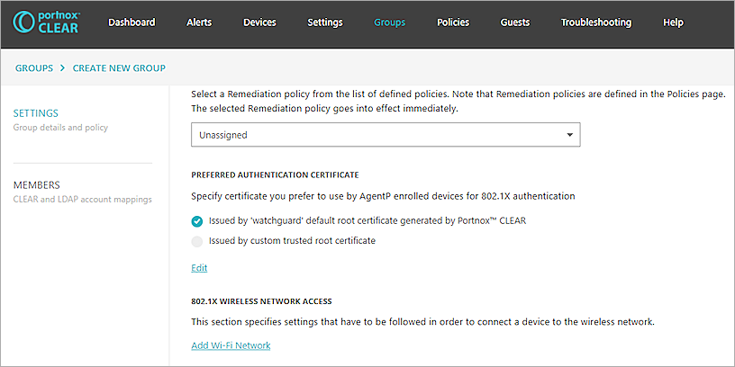
- In the Network name text box, type the SSID of the network.
- For Allowed authentication types, select the Credentials check box.
- From the Device requirement drop-down list, select Agentless or AgentP-based & Agentless.
- Click Save.
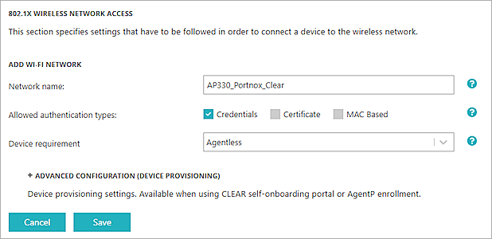
- Click Save.
- Select the Members tab.
- Expand the CLEAR REPOSITORY.
- Select your account and move your account to this group.
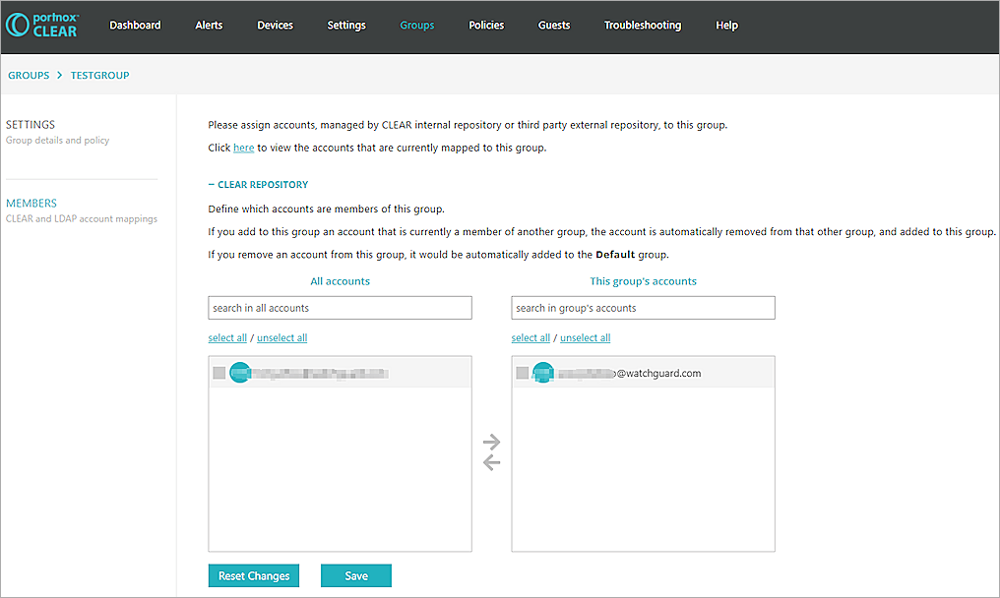
- Click Save.
Wi-Fi in WatchGuard Cloud Configuration
For detailed information on WatchGuard Cloud AP deployment, see Get Started with Wi-Fi in WatchGuard Cloud.
Access points can have two different types of settings:
-
Device-level settings — Settings that you apply individually to each access point.
-
Access point site settings — Access point sites enable you to create SSID settings and apply them to multiple access points that subscribe to the site.
Configure Authentication Domain for Portnox CLEAR RADIUS Server In WatchGuard Cloud
- Log in to your WatchGuard Cloud account. If you have a Service Provider account, you must select a subscriber account.
- Select Configure > Authentication Domains.
- Click Add Authentication Domain.
- In the Domain Name text box, type a domain name.
- Click Next.
- In the Add servers section, select RADIUS.
- From the Type drop-down list, select Host IPv4.
- In the IP Address text box, type the Cloud RADIUS IP Address from Portnox CLEAR.
- In the Port text box, type the authentication port number for the RADIUS server from Portnox CLEAR.
- In the Shared secret text box, type the shared secret from the Portnox CLEAR server.
- In the Confirm shared secret text box, type the shared secret from the Portnox CLEAR RADIUS server.
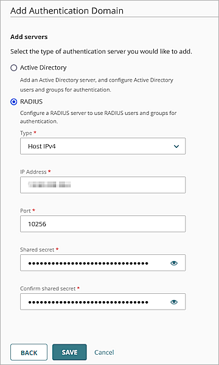
- Click Save to save the Authentication Domain settings.
- Click Done.
Configure the Authentication Domain and SSID Settings for an Access Point (Device Level Configuration)
To configure Authentication Domain and SSID settings for a single access point at the device level configuration:
- From WatchGuard Cloud, select Configure > Devices.
- Select your Access Point.
- Select Device Configuration.
- In the Authentication tile, click Domains.
- Click Add Authentication Domain.
- From the Select an existing Authentication Domain drop-down list, select the domain you created in the previous section.
- From the RADIUS Server drop-down list, select the RADIUS server.
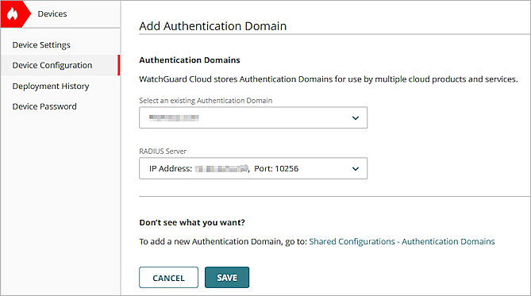
- Click Save.
- Click Back to return to the configuration settings.
- Click SSIDs.
- Click Add SSID.
- In the SSID Name text box, type the SSID name.
- Select the Broadcast SSID check box.
- From the SSID Type drop-down list, select Private.
- From the Radio drop-down list, select 2.4 GHz and 5 GHz.
- From the Security drop-down list, select WPA2 Enterprise.
- From the Authentication Domain drop-down list, select the domain you created in the previous section.
- In the Network section, select Bridged.
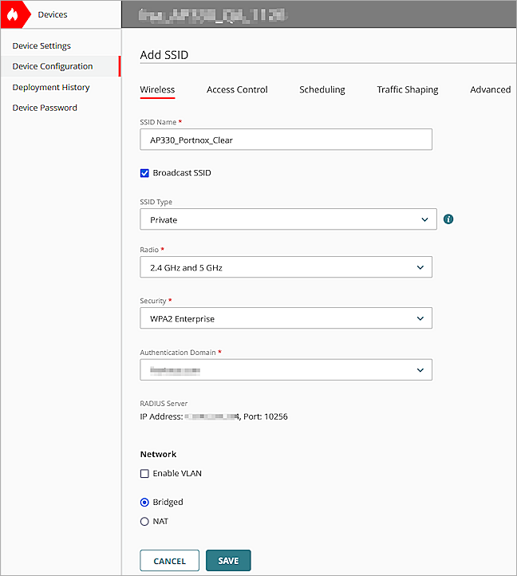
- Click Save.
- Click Schedule Deployment.
- Select Deploy changes now.
- In the Description text box, type a description for the deployment.
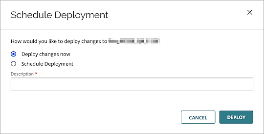
- Click Deploy.
Configure the Authentication Domain and SSID Settings for an Access Point Site
To configure Authentication Domain and SSID settings and apply the configuration to multiple access points with an Access Point Site:
- In WatchGuard Cloud, select Configure > Access Point Sites.
- Click Add Site.
- In the Name text box, type a name for the site.
- Click Add.
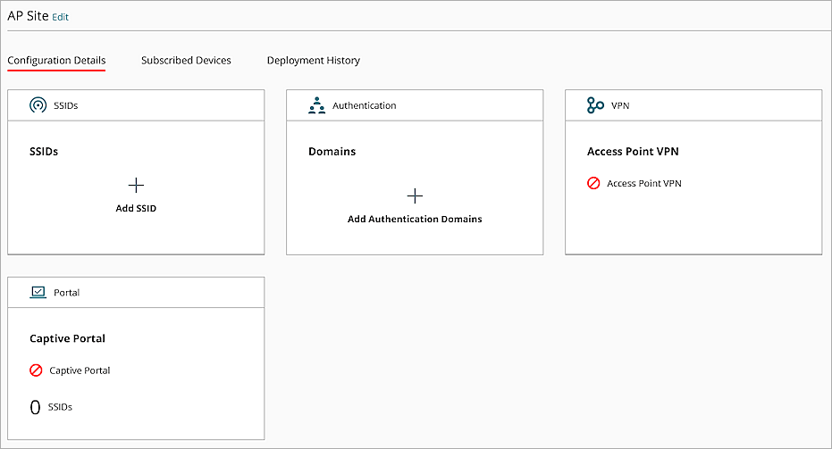
- In the Authentication tile, click Domains.
- Click Add Authentication Domain.
- From the Select an existing Authentication Domain drop-down list, select the domain you created in the previous section.
- From the RADIUS Server drop-down list, select the RADIUS server.

- Click Save.
- Click Back to return to the site configuration settings.
- Click SSIDs.
- Click Add SSID.
- In the SSID Name text box, type the SSID name.
- Select the Broadcast SSID check box.
- From the SSID Type drop-down list, select Private.
- From the Radio drop-down list, select 2.4 GHz and 5 GHz.
- From the Security drop-down list, select WPA2 Enterprise.
- From the Authentication Domain drop-down list, select the domain you created in the previous section.
- In the Network section, select Bridged.
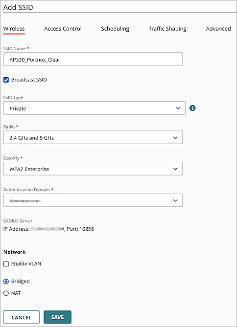
- Click Save.
- Click Schedule Deployment.
- Select Deploy changes now.
- In the Description text box, type a description for the deployment.
- Click Deploy.
- Click Close.
- Click Back to return to the site configuration settings.
- Select the Subscribed Devices tab.
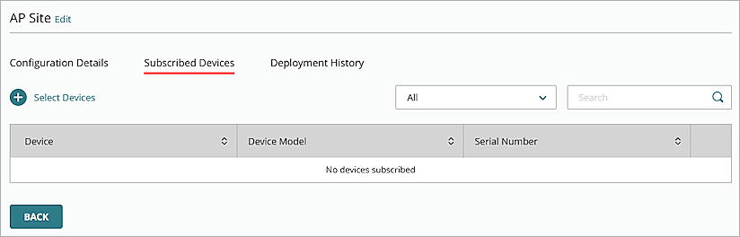
- Click Select Devices.
- Select the access points to subscribe to the site.
- Click Save.
Test Portnox™ CLEAR Integration
- Use a wireless client to connect to the SSID you created. For example: AP330_Portnox_Clear
- Type your user name and password that you received in the Portnox configuration.
You should see a 802.1X authentication success notification in the Portnox alerts page.
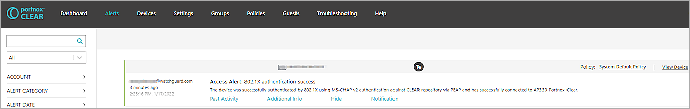